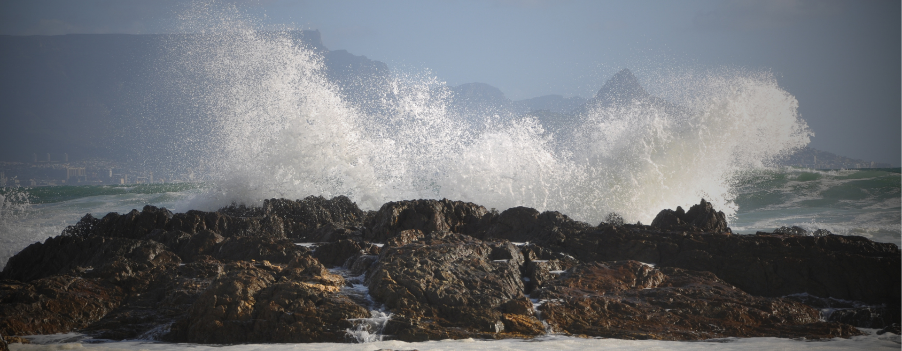

Pearl
Light & easyBright, calm and completely your own. A comfortable stay for one or two, with everything you need for an easy self-catering stay.
Check availability ↗
YOUR LITTLE CORNER OF BLOUBERG
Salt on your skin. A slower kind of morning.
Four self-catering stays, a short drive from the beach.
SETTLE INTO YOUR OWN SPACE
For slow mornings, beach days and time together. Explore each space, choose your favourite, and make yourself at home.
Bright, calm and completely your own. A comfortable stay for one or two, with everything you need for an easy self-catering stay.
Check availability ↗A welcoming self-catering unit that is well suited to longer stays. Make yourself comfortable, enjoy meals at home, and settle into everyday life near the coast.
Check availability ↗A comfortable self-catering space to settle into after a day out. Enjoy relaxed mornings at home and easy access to Blouberg and Cape Town.
Check availability ↗Tucked at the back of the property, with garden views and a little more quiet. A peaceful place to unwind after a day of exploring.
Check availability ↗TAKE LIFE AT YOUR OWN PACE
Take a short drive to Blouberg Beach, take in the views of Table Mountain, or spend the day discovering Cape Town. Back at Seajax, your own comfortable space is waiting.
Local weather on Windguru ↗Just a five-minute drive to the beach, with ocean views and time to relax.
Self-catering freedom for breakfast at home, an evening in, or a day out.
Stay near the coast, within reach of the city's sights, shops and restaurants.
CLOSE TO THE WATER. CLOSE TO EVERYTHING.
31 Tritonia Road
Table View, Cape Town, 7441
Blouberg Beach / Kite Beach~5 min drive
Table View shops & restaurants~10 min drive
Cape Town city centre~25 min drive
Cape Town International Airport~35 min drive
Travel times are approximate.YOUR NEXT CHAPTER, BY THE SEA
Find your dates, choose your space, and make it a stay to remember.
View current rates and availability on your preferred booking platform.